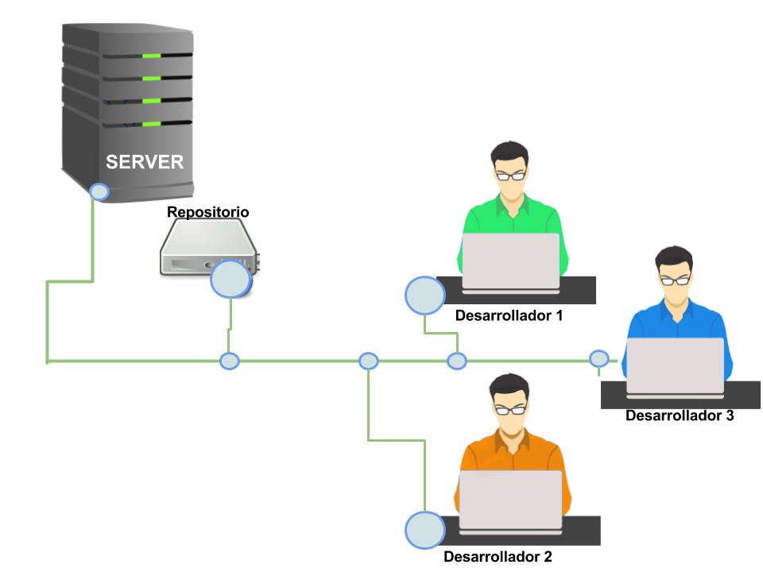
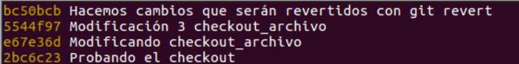
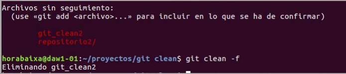
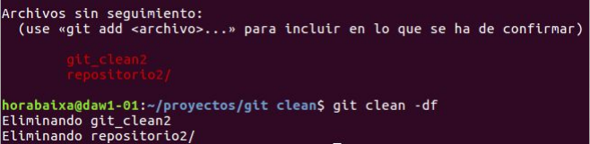

Índice
Tema 0. ¿Qué es GIT?
Tema 1. ¿Qué es GIT?
Tema 2. ¿Qué es GIT?
Tema 3. ¿Qué es GIT?
Tema 4. ¿Qué es GIT?
GIT
¿Qué es un sistema de control de versiones?
Un sistema de control de versiones (CVS) te permite realizar un seguimiento de la historia de una colección de archivos y además incluye la funcionalidad de revertir a una versión anterior.a colección de archivos usualmente es código fuente de algún lenguaje de programación, sin embargo, un sistema de control de versiones funciona con cualquier tipo de archivo
¿Qué es sistema de control de versiones distribuidas?
Un sistema de control de versiones distribuida tiene un servidor central para guardar el repositorio y cada ususario puede hacer una copia completa del repositorio central y por ser una copia completa tiene las misma funcionalidades que el repositoriuo original
¿Qué es GIT?
Es un sistema de control de versiones distribuida que tiene su origen a partir del del desarrollo de kernel de Linux. Es muy utilizado por proyectos comerciales de verciones como Android o Eclipse. Git modela sus datos más como un conjunto de instantáneas de un mini sistema de archivos Cada vez que confirmas un cambio, o guardas el estado de tu proyecto en Git El repositorio local Luego de clonar o crear un repositorio el usuario tiene una copia completa del repositorio, y puede realizar operaciones de control de versiones contra este repositorio local, como por ejemplo crear nuevas versiones, revertir cambios, etc. El flujo de trabajo básico en Git es algo así
- Modificas una serie de archivos en tu directorio de trabajo (working directory).
- Añadís instantáneas de los archivos a tu área de preparación (staging area).
- Confirmas los cambios, lo que toma los archivos tal y como están en el área de preparación, y almacena esa instantánea de manera permanente en tu directorio de Git (git directory).
Repaso de algunos conceptos útiles:
- Repositorio: Un repositorio contiene la historia, las diferentes versiones en el tiempo y todas las diferentes ramas. En Git cada copia del repositorio es un repositorio completo. Si el repositorio en el que estás trabajando no es creado con la opción “bare”, entonces permite hacer un checkout de las revisiones que desees en tu repositorio local.
- Working tree: Posee el contenido de un commit que se puede obtener haciendo un checkout desde un repositorio git. Luego uno puede modificar ese contenido y hacer un nuevo commit con los cambios al repositorio.
- Branch (rama): Un branch es un puntero con un nombre determinado por el usuario que apunta a un commit. Posicionarse en un branch utilizando git es denominado como “hacer un checkout” de ese branch. Si estás trabajando en un determinado branch, la creación de un nuevo commit hace avanzar el puntero a esta nueva instancia. Cada commit conoce sus antecesores así como a sus sucesores en caso de tenerlos. Uno de los branches es el default, generalmente llamado master.
- Tag: Un tag apunta a un commit que unívocamente identifica una versión del repositorio. Con un tag, podés tener un puntero con nombre al que siempre puedas revertir los cambios. Por ejemplo, la versión de 25.01.2009 del branch “testing”.
- Commit: Vos commiteas los cambios a un repositorio. Esto crea un nuevo objeto commit en el repositorio que unívocamente identifica una nueva versión del contenido del repositorio. Esta revisión puede ser consultada posteriormente, por ejemplo si uno quiere ver el código fuente de una versión anterior. Cada commit posee metadata que nos informa acerca del autor, la fecha y otros datos que nos pueden resultar prácticos a la hora de tratar de encontrar uno determinado.
- URL: Una URL en Git determina la ubicación de un repositorio. Revisión: Representa una versión del código fuente. Git implementa las revisiones de la misma manera que los objetos commit.
- HEAD: Es un objeto simbólico que apunta generalmente al branch sobre el que estamos trabajando (lo que también conocemos como “checked out branch”). Si uno cambia de un branch al otro el HEAD apunta al último commit del branch seleccionado. Si uno hace un checkout de un determinado commit, el HEAD apunta a ese commit.
- Staging area: Es el lugar en el que se almacenan los cambios del working tree previos al commit. Es decir, contiene el set de cambios relevantes para el próximo commit.
- Index: Es un término alternativo para referirnos al staging area.
Comándos básicos en GIT
Crea un directorio nuevo, ábrelo y ejecuta git init para crear un nuevo repositorio de git.
Hacer checkout a un repositorio
Crea una copia local del repositorio ejecutando
git clone /path/to/repository Si utilizas un servidor remoto, ejecuta
git clone username@host:/path/to/repository

Añadiendo nuevos ficheros
Así que tenemos un repositorio, pero no hay nada en ella. Puede agregar archivos con el comando add.
git add filename
Realizar un commit
Ahora que hemos añadido estos archivos, queremos que se pueden almacenar en realidad en el repositorio Git. Hacemos esto de enviarlos al repositorio.
git commit -m "Adding files"

Estado de GIT
Muestra el estado del árbol de trabajo git status
Envío de cambios
Deshace el último commit y sacar del staging area los archivos modificadosgit reset HEAD
Deshace cambios y commits
Deshace el último commit y sacar del staging area los archivos modificadosgit reset HEAD
Remueve archivos del staging area
Saca la entrada del archivo en el index, de manera que no va a ser tenido más en cuenta para el próximo commit.git rm
git branch
Listará las ramas locales que tengas.git branch
git branch
Crear una nueva rama y cambiar a ella git branch (name_newBranch)
Añadir una rama remota
Las ramas remotas referencian el estado de nuestras ramas locales. Son ramas locales que no puedes mover, se mueven automáticamente cuando estableces comunicaciones en la red.
Es decir, tu rama local tendrá una sombra, que será la rama remota, la cual se irá actualizando a medida que hagamos commits desde nuestro ordenador a la rama local.
Para actualizar la rama remota con los cambios deseados tendremos que escribir
git push -u origin
-u lo pondremos si creamos nuestra rama por primera vez.
git branch -d
Eliminará la rama git branch -d (name_delBranch)
git checkout
Con este comando podemos hacer tres funciones distintas:
- Comprobar los archivos
- Comprobar los commits
- Comprobar las ramas
Para los archivos y commits:
Podemos retroceder versiones de los archivos y commits
haciendo un checkout, que veremos a continuación.
El checkout tiene los siguientes comandos:
git checkout master
git checkout
git checkout
git checkout HEAD
Creamos un archivo con el nombre “checkout_archivo”. Su contenido contendrá letras, luego de esto, hacemos un commit.

Ahora añadiremos más texto al archivo y haremos otro commit, entonces, podremos usar el comando checkout para retroceder a su forma original (imagen de arriba).

Así queda la lista de commits actual:

Y ahora usaremos el comando git checkout .

De esta forma revertimos todos los cambios hechos en el commit “Modificación 3…” y
convertimos el archivo en una versión temporal del commit “Probando el checkout”.
Para guardar todos los cambios que hemos hecho, escribimos:
git checkout master.
Al volver a la rama master se nos guardará el progreso.
Con git checkout 8298fed (commit anterior a “Probando el checkout”) nos situaremos
en un “espacio virtual” donde estaremos en la misma versión del proyecto que el commit
8298fed.
De esta forma, podremos modificar todo lo que queramos sin preocuparnos de perder el
estado actual del proyecto.
Para guardar los cambios que hicimos nos situaremos en la rama master git checkout
master.
Ejemplo anterior con otro commit, nos hemos situado en el proyecto donde el commit
introducido es el último. Aquí podemos hacer todos los cambios, si los queremos guardar
solo tendremos que crear una rama nueva.
(Anteriormente he creado una rama list para conservar los cambios).

git revert
Con esta función podemos revertir los commits, no los eliminamos, es como un comando
“undo”. De esta forma podemos prevenir perder datos en nuestro proyecto.
Es importante saber que con esta función podemos deshacer un solo commit.
Comandos:
git revert
git revert HEAD

Revertir tiene dos importantes ventajas sobre resetear:
- No elimina el historial del proyecto, que lo hace seguro.
- Es capaz de seleccionar un commit individual en un punto arbitrario de la historia.
Ahora veremos un ejemplo:
Creamos un commit, el bc50bcb, el cual ahora desharemos.

Usamos git revert HEAD para revertir los cambios.
El ejemplo anterior se podría visualizar de la siguiente forma:

git reset
Git reset, igual que git revert, nos da la opción de deshacer nuestros cambios.
Sin embargo, git reset es permanente. Es decir, al deshacer cambios, no podemos
rehacerlos.
Esto significa que no debe utilizarse git reset cuando se está trabajando en un
repositorio público. Ya que cuando publiques un trabajo en el que has borrado commits
y otros usuarios que aún tienen esos commits traten de sincronizarse contigo, parecerá
que parte del proyecto ha desaparecido.
Git reset se puede utilizar de diferentes formas:
git reset
git reset
git reset --hard
git reset
git reset --hard
El comando git reset (

El siguiente comando, git reset, funciona exactamente igual que el anterior, pero afecta a todos los documentos.

Usando git reset --hard, es posible borrar por completo cualquier cambio que no
se haya incluído todavía en un commit.

Usando el comando git reset (

El comando git reset --hard (git reset . La diferencia
principal entre los dos es que git reset --hard , no solo nos hace
retroceder hasta el commit que elijamos, sino que también borra por completo
cualquier documento que se haya añadido en los commits posteriores.

git clean
El comando git clean nos permite borrar todos archivos sin seguimiento que puedan
haber en el directorio de trabajo.
Al contrario que el comando rm, que nos permite eliminar cada archivo de forma
manual, git clean es definitivo, y no pueden deshacerse los cambios hechos con él.
Es posible combinar este comando con git reset --hard para restaurar nuestro
directorio al mismo estado de un commit en concreto.
Existen múltiples comandos relacionados con git clean:
git clean -n
git clean -f
git clean -f
git clean -df
git clean -xf
Usando git clean -n, podemos ver qué documentos serán borrados antes de cometer
ningún cambio.
Para borrar los documentos, usamos git clean -f. -f (force) debe incluirse para
que el comando se ejecute a no ser que la opción clean.requireForce esté marcada
como false. Esto sirve como medida de seguridad para evitar borrar documentos por
accidente.
También es posible escribir git clean -f ,
El comando git clean -df nos permite eliminar tanto documentos sin seguimiento
como directorios sin seguimiento.
Con git clean -f, repositorio2 no se borra:
 Con git clean -df, tanto el documento como el repositorio se borran.
Finalmente, con git clean -xf, no solo podemos eliminar documentos sin
seguimiento, sino que también podemos eliminar cualquier documento que Git
normalmente ignora, como .gitignore.
git checkout -b
Crear y cambiar inmediatamente a la nueva rama git checkout -b (name_newBranch)
git merge
Combinar la rama especificada en la rama actual. git merge (branch)
git log
Muestra la historia del desarrollo de este proyecto git log --oneline
git log --oneline --graph
Podemos ver más claramente cuando las ramas se separaron y luego cuando se fusionaron de nuevo.git log --oneline --graph
git tag
El comando tag, básicamente, consiste en poner un marcador permanente en un commit en concreto para que pueda ser usado para comparar con otro commit en el futuro.
git -a v1.0
git pull
Busca en un repositorio remoto y trata de combinar en la rama actual lo que trajo del remoto. git pull (github)
git fetch
Se usa para sincronizar el repositorio local con otro remoto, bajando los datos no tenes a nivel local. git fetch (github)
git push
Actualiza las refs remotas usando refs locales, mientras envía objetos necesarios para completar las refs dadas git push (github)

Crear y utilizar un proyecto GIT en Eclipse
Empecemos...
Para empezar tenemos que crear un proyecto en Eclipse, la opción a elegir será Static Web Project. La encontraremos en el menú desplegable en la parte del explorador de proyectos. En la captura podemos ver como se crea un nuevo proyecto con su nombre y la carpeta donde se guardará el progreso.

Compartiendo el proyecto
Una vez creado toca compartir el proyecto. Para ello vamos al proyecto y buscamos las siguientes opciones: Team > Share Proyect. Cuando estemos ahí iremos a crear un nuevo repositorio, seleccionamos la opción de “Use or create repository in parent folder or project”. Hecho lo anterior ahora solo tendremos que seleccionar el proyecto tal como está en la imagen y pulsar en Create Repository.

Subiendo al repositorio
Después haremos un commit y subiremos los cambios de la rama master (Push Branch Master). Donde tendremos que poner la URL de nuestro repositorio de GIT. Esto nos subirá los commits y creará un repositorio remoto .

Añadiendo el .gitignore
Añadimos el archivo .gitignore Forma 1: mediante los snippets Descargaremos el archivo gitignore de Internet y lo añadiremos a la plantilla de snippet. De esta forma, cuando lo necesitemos solo tendremos que pegar la plantilla en un archivo de texto dentro del proyecto:

Una muestra del contenido del gitignore.

Ahora ya tenemos la plantilla y la podemos usar en todos nuestros proyecto. En nuestro caso la importaremos al archivo que hemos creado anteriormente.

La otra forma sería descargar el archivo gitignore de Internet y moverlo a la carpeta del proyecto. Donde tenemos WebContent, .git, .settings. ¡Y ya hemos terminado!